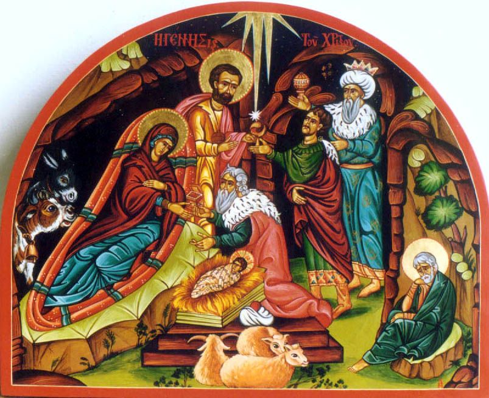

7 01 2012 (1953 дня 21 час назад)

В Абхазии отмечают сегодня Рождество Христово. Этот день в республике является праздничным и нерабочим. К полуночи верующие собрались в Сухумском кафедральном соборе святого Благовещения, главном соборе Епархии, где глава Пицундской и Сухумской Епархии священник Виссарион (Аплиаа) возглавил Рождественскую литургию.
Праздничные службы прошли во всех действующих Храмах Абхазии
Рождественские богослужения прошли также в Чубурхинджском Храме Георгия Победоносца в Гальском районе ,праздничную литургию возглавил настоятель Храма о.Матфей. В Очамчирском Храме Святого Ефстафия Апсильского, возглавил настоятель Храма иерей о.Игорь . В Драндском Соборе Успения Божьей Матери- иеромонах о.Андрей . в Илорском Храме-игумен о.Сергий, в Храме Ильи Пророка в Агудзере-игумен о.Долмат .
В церкви Преображения на Михайловке близ Сухума, в Команах - игумен о. Игнатий. в Новоафонском Монастыре божественную литургию возглавили настоятель Новоафонского монастыря иеромонах Андрей (Ампар) и архимандрит Дорофей (Дбар). В Гудаутском Храме Покрова Пресвятой Богородицы-иеромонах о.Василиск , а также праздничное богослужение проведено в Гагрском храме Преображения Господня, и Лыхненском Храме Успения Богородицы.
Православная Церковь считает Рождество Христово вторым по значимости христианским праздником, который шествует за Пасхой. В разных странах Рождество Христово празднуется в различные дни. Так, например, в Армении Рождество празднуют 6 января, а христиане в России, Украине,Грузии, Беларусии, Абхазии, Албании, Казахстане, Боснии, Литве, Кыргызстане, Сербии, Молдове, Эфиопии и Черногории этот праздник встречают 7 января
Рождество считается семейным праздником, принято приглашать на Рождество Христово своих родственников, которых хозяева потчуют разнообразными блюдами. А изобилие на рождественском столе сулит благополучие в новом году. При этом Рождество у разных народов празднуется определенным набором национальных блюд.
Одной из примечательных рождественских традиций в Абхазии является обычай ставить на окна зажженные свечи. Согласно Евангелию, в ночь рождения Христа Иосиф и Мария искали пристанища в Вифлееме. Горящая свеча является своеобразным приглашением Богородицы к себе в дом. А вместе со святым семейством к гостеприимным хозяевам обязательно придет счастье, любовь и благополучие.
Рождество считается величайшим праздником, который отмечают миллионы людей различного вероисповедания, и именно оно даем нам веру в то, что новый год принесет нам мир и благоденствие!
Праздничные службы прошли во всех действующих Храмах Абхазии
Рождественские богослужения прошли также в Чубурхинджском Храме Георгия Победоносца в Гальском районе ,праздничную литургию возглавил настоятель Храма о.Матфей. В Очамчирском Храме Святого Ефстафия Апсильского, возглавил настоятель Храма иерей о.Игорь . В Драндском Соборе Успения Божьей Матери- иеромонах о.Андрей . в Илорском Храме-игумен о.Сергий, в Храме Ильи Пророка в Агудзере-игумен о.Долмат .
В церкви Преображения на Михайловке близ Сухума, в Команах - игумен о. Игнатий. в Новоафонском Монастыре божественную литургию возглавили настоятель Новоафонского монастыря иеромонах Андрей (Ампар) и архимандрит Дорофей (Дбар). В Гудаутском Храме Покрова Пресвятой Богородицы-иеромонах о.Василиск , а также праздничное богослужение проведено в Гагрском храме Преображения Господня, и Лыхненском Храме Успения Богородицы.
Православная Церковь считает Рождество Христово вторым по значимости христианским праздником, который шествует за Пасхой. В разных странах Рождество Христово празднуется в различные дни. Так, например, в Армении Рождество празднуют 6 января, а христиане в России, Украине,Грузии, Беларусии, Абхазии, Албании, Казахстане, Боснии, Литве, Кыргызстане, Сербии, Молдове, Эфиопии и Черногории этот праздник встречают 7 января
Рождество считается семейным праздником, принято приглашать на Рождество Христово своих родственников, которых хозяева потчуют разнообразными блюдами. А изобилие на рождественском столе сулит благополучие в новом году. При этом Рождество у разных народов празднуется определенным набором национальных блюд.
Одной из примечательных рождественских традиций в Абхазии является обычай ставить на окна зажженные свечи. Согласно Евангелию, в ночь рождения Христа Иосиф и Мария искали пристанища в Вифлееме. Горящая свеча является своеобразным приглашением Богородицы к себе в дом. А вместе со святым семейством к гостеприимным хозяевам обязательно придет счастье, любовь и благополучие.
Рождество считается величайшим праздником, который отмечают миллионы людей различного вероисповедания, и именно оно даем нам веру в то, что новый год принесет нам мир и благоденствие!